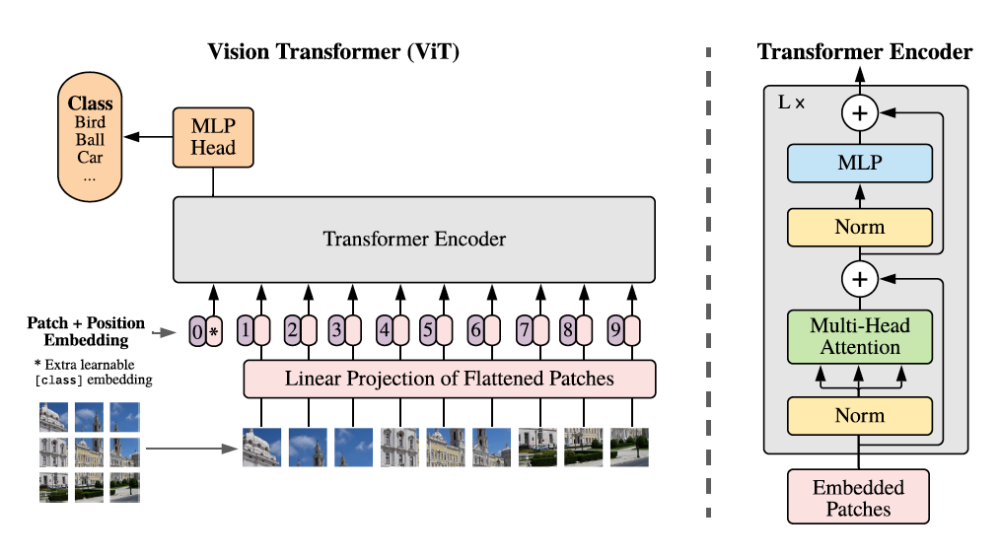
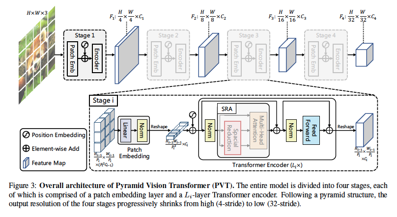
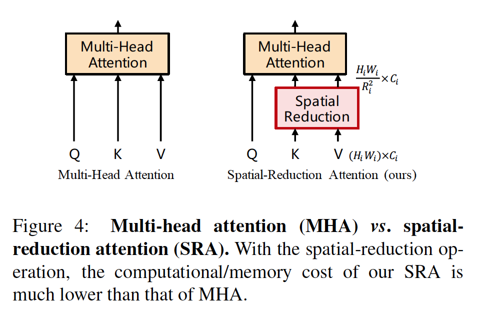
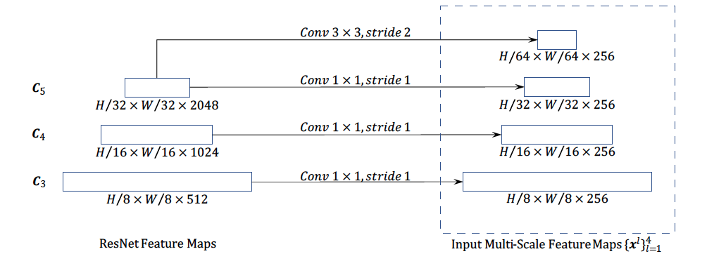
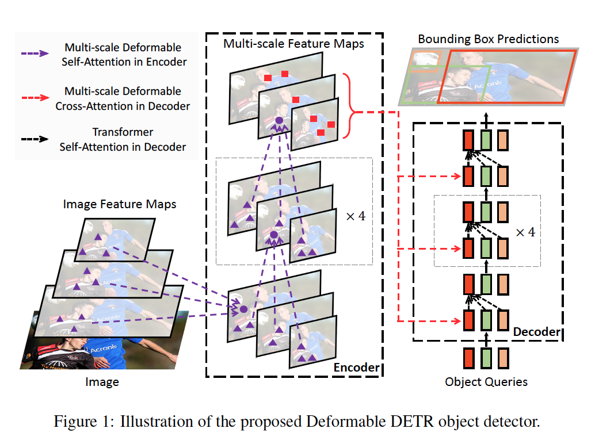
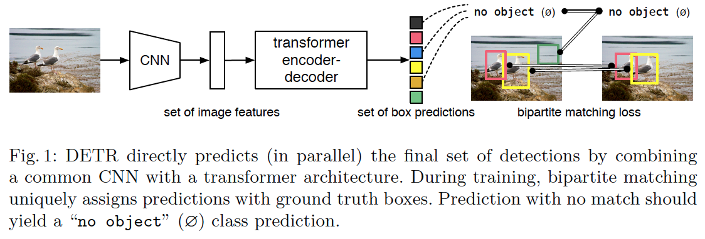
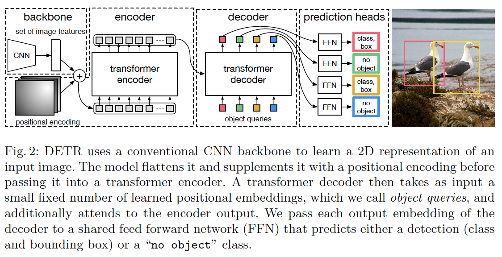
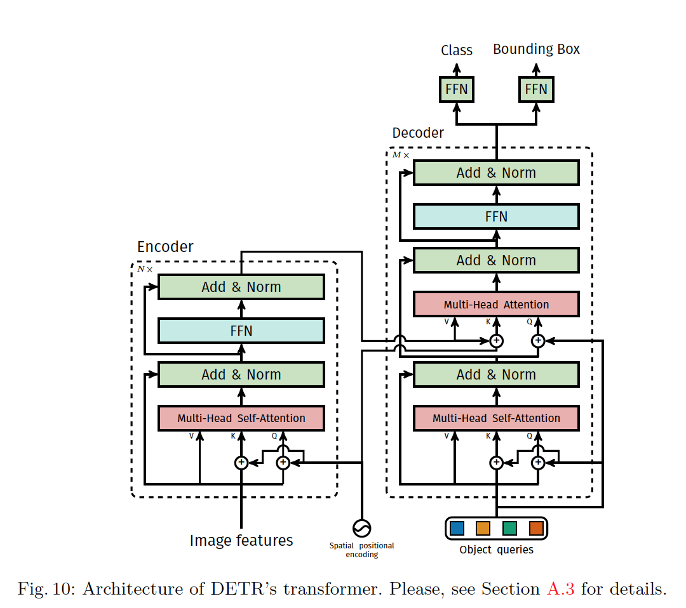

目标识别
[TOC]
基于深度学习的视觉目标检测技术综述
作者：曹家乐，2022
发展历程
- 基于手工设计特征的方法
- 支持向量机
- AdaBoost
- Haar特征(Viola, 2004)
- 方向梯度直方图histograms of oriented gradients(Dalal, 2005)
- 深度学习
- 区域卷积神经网络region-based convolutional neural network, R-CNN (Girshick, 2014)
- 单次检测single shot detector, SSD (Liu, 2016)
- yolo (Redmon, 2016)
- detection transformer, DETR (Carion, 2020)
深度网络模型：
- AlexNet(Krizhevsky,2012)
- GoogLeNet(Szegedy,2015)
- VGGNet(Simonyan,2015)
- ResNet(He,2016)
- DenseNet(Huang,2017)
- Mobilenet(Howard,2018)
- ShuffleNet(Zhang,2018)
- SENet(Hu, 2018)
- EfficientNet(Tan,2019)
- ViT(Dosovitskiy,2021)
- Swin(Liu,2022)
目标检测方法
- DetectorNet(Szegedy,2014)
- R-CNN(Girshick,2014)
- OvearFeat(Sermanet,2014)
- SPPNet(He,2015)
- Fast R-CNN(Girshick,2016; Ren,2016)
- YOLO(Redmon,2016)
- SSD(Liu,2016)
- R-FCN(Dai,2017)
- FPN(Lin,2017)
- YOLOv2(Redmon,2017)
- Mask RCNN(He,2018)
- DCN(Dai,2018)
- RetinaNet(Lin,2018)
- Cascade RCNN(Cai,2018)
- YOLOv3(Redmon,2019)
- CornerNet(Law,2019)
- FCOS(Tian,2020)
- CenterNet(Zhou,2020)
- EfficientDet(Tan,2020)
- ATSS(Zhang,2020)
- MoCo(He,2020)
- YOLOv4(Bochkovskiy,2021)
- Deformable DETR(Zhu,2021)
- DETR(Carion,2021)
- YOLOv5(Jocher,2021)
- UP-DETR(Dai,2021)
- Pix2seq(Chen,2022)
检测设备
- 单目相机
- 双目相机 （提供三维信息）
基于单目相机流程及其涵盖的方法
数据预处理
- 翻转
- 放缩
- 均值归一化
- 色调变化
- 剪切、擦除、分区(DeVries, 2017; Zhong, 2020b; Singh, 2017; Chen, 2020a)
- 混合(Mixup: Zhang, 2018; CutMix: Yun, 2019; Fang, 2019; Mosaic: Bochkovskiy, 2020; Montage: Zhou, 2020; dynamic scale training: Chen, 2020b)
检测网络
- 基础骨架
- AlexNet(Krizhevsky, 2012)
- VGGNet(Simonyan, 2014)
- ResNet(He, 2016)
- DenseNet(Huang, 2017)
- Transformer(Vaswani, 2017), ViT(Dosovitskiy, 2021; Beal, 2020), Swin(Liu, 2021c), PVT(Wang, 2021c)
- 特征融合
- 特征金字塔(Lin, 2017a)
- 预测网络(分类回归任务)
- 两阶段目标检测：全连接
- 单阶段目标检测：全卷积
- 基础骨架
标签分配与损失计算
标签分配准则
- 交并比准则
- 基于锚点框与真实框的交并比
- 距离准则
- 基于无锚点框 ，点到物体中心的距离
- 似然估计准则
- 分类、回归
- 二分匹配准则
- 分类、回归
- 损失函数
- 交叉熵函数
- 聚焦损失函数(Lin, 2017b)
- 回归损失函数: L1损失函数、平滑L1损失函数、IoU损失函数、GIoU损失函数(Reztofighi, 2019)、CIoU损失函数(Zheng, 2020b)
- 交并比准则
后处理：为每个物体保留一个检测结果，去除冗余结果
- 非极大值抑制NMS
- soft-NMS(Bodla, 2017)
- IoUNet(Jiang, 2018)
- 定位方差(He, 2018)
- 上下文推理(Pato, 2020)
基于锚点框方法
描述：为空间每个位置设定多个矩形框（框的尺度和长宽比），尽可能的涵盖图像中的物体
分类：
- 两阶段目标检测
- 提取k个候选框
- 对候选框分类和回归
- 单阶段目标检测
- 直接对锚点框分类和回归
基于无锚点框方法
分类：
- 基于关键点目标检测：多个关键点集成到物体上
- 基于内部点目标检测：物体内部点到物体边界的上下左右偏移量
基于双目相机流程及其涵盖的方法
方法流程与单目相同
基于直接视锥空间
描述：直接使用基础骨干提取的两个单目特征构造双目特征。
方法：
- 串接特征构造
不改变原单目特征的坐标空间 - 平面扫描构造
通过逐视差平面或者深度平面地扫描一对2维特征，所得三维特征即是匹配代价体
基于显式逆投影空间
描述：将存在尺度变化和遮挡问题的视锥空间图像逆投影到尺度均匀、不存在重叠遮挡的3维空间，从而缓解视锥投影产生的问题。
方法：
- 基于原始图像视差的逆投影方法
先利用双目视差估计算法预测每个像素的视差，将像素的视差逆投影到三维空间生成电云，最后利用点云的3维检测方法进行目标检测 - 基于特征体的逆投影方法
通过插值和采样将平面扫描得到的匹配代价体变换到3维空间，利用了图像特征提供的颜色和纹理信息。 - 基于候选像素视差的逆投影方法
仅聚焦感兴趣目标区域的三维空间，先利用实例分割方案得到目标的前景像素，然后生成仅含前景区域的3维空间。
发展趋势
- 高效的端到端目标检测transform，加快收敛，减少计算资源。
- 基于自监督学习的目标检测，目标检测任务存在数量和尺度不确定的物体。
- 长尾分布目标检测，现实世界物体类别数量庞大且不同类别的物体数量存在极度不平衡。
- 小样本、0样本目标检测能力的提高
- 大规模双目目标检测数据集少，需要标注物体的2维和3维信息以及相机标注视差和相机参数，还需完善评价体系和开放测试平台
- 弱监督双目目标检测
YOLOv7: Trainable bag-of-freebies sets new state-of-the-art for real-time object detectors
作者：Chien-Yao Wang，2022
解决的问题
发现的问题:
- 模型再参数化
- 用动态标签分配技术后，如何将动态标签分配给模型的不同输出层
本篇文章解决的问题：
- 最高推理精度56.8%AP和最快推理速度160FPS,都达到最高水平，参与对比的模型有：YOLOv5、YOLOX、Scaled-YOLOv4、YOLOR、PPYOLOE、DETR、Deformable DETR、DINO-5scale-R50、ViT-Adapter-B、SWIN-L Cascade-Mask R-CNN、ConvNeXt-XL Cascade-Mask R-CNN
- 支持移动GPU以及边缘端和云端GPU
- 设计trainable bag-of-freebies方法，既可增强训练代价提高检测准确度又不增加推理代价
- 提出planned re-parameterized model
- 提出新的标签分配方法，coarse-to-fine lead guided label assigment
- 提出extend and compound scaling方法，减少40%的模型参数和50%计算时间
其他模型的优点和不足：
- YOLOX和YOLOR只改进各种GPU推理速度
- 基于MobileNet, ShuffleNet, GhostNet针对CPU设计
- ResNet, DarkNet, DLA, CSPNet针对GPU设计
- YOLO和FCOS具有：1、快而强壮的网络架构，2、高效的特征集成方法，3、鲁棒的损失函数，4、高效的标签分配方法，5、准确的检测方法，6、高效训练方法
当前的不足
使用的方法
模型再参数化
模型再参数化：融合多个计算模块于一体，可是为组装技术
- 模型间组合方法
- 在不同训练集中训练多个相同模型，然后再平均模型的参数
- 在不同的迭代次数间进行模型参数均值化
- 模块间组合方法
在训练期间将一个模块分解成多个分支模块，在推理时将多个分支模块整合成一个完整模块
模型缩放
模型放缩可以增大和缩小模型使它适合不同计算能力的设备，满足不同的推理速度。
放缩方法：网络架构搜索Network architecture search(NAS)，折中了网络参数大小、计算时间、推理速度和精确性
放缩因子的影响：
- 对基于非连接的网络架构，在进行模型放缩时由于每个隐藏层的入度和出度不被改变因此可以独立分析每个放缩因子对模型参数数量和计算速度的影响
- 对基于连接的网络架构，在进行模型隐藏层深度放大或缩小时紧跟在计算模块后的转移/转化模块的入度会减小或增大，不能独立分析单个尺度因子的影响必须一起分析
- 文章提出compound scaling method合成尺度方法既可保持原有模型的的性质又可保持最优结构
架构
选取架构主要考虑1、模型参数数量，2、计算量，3、计算密度
采用Extended-ELAN(E-ELAN)扩展高效层聚合网络架构，该架构使用扩展基数层、清洗基数层、合并基数层增强网络学习能力
基于早期版本的YOLO框架和YOLOR框架作为基本框架
可训练赠品袋trainable bag-of-freebies
计划再参数化卷积
- 如何将再参数化卷积和不同的网络结合？
- 提出planned re-parameterized convolution
- 提出无identity connection的RePConv构造planned re-parameterized convolution
- 用RepConvN网络层替换3堆叠ELAN架构中不同位置处的3x3卷积层
以粗为辅以精为主的损失值
- 深度监督是在网络的中间层添加额外的辅助头，将带有损失值信息的浅层网络权重作为引导方式
- 将负责最后输出的头称为主头，将用于协助训练的头称为辅头
- 采用软标签即使用网络预测输出的性质和分布和考虑实际标签，使用一些计算和优化方式生成可靠的标签
- 如何分配软标签到主头和辅头？
- 分别计算主头和辅头预测结果，使用各自的分配器结合实际结果制作各自标签，再通过各自标签和头计算损失
- 文章提出经分配器用主头和实际结果制作由粗到精的等级标签，再将这些等级标签用在主头和辅头上计算损失值
批归一化放到conv-bn-activation 拓扑结构中
YOLOR的隐性知识以串行和并行方式结合到卷积特征图中
EMA模型
AN IMAGE IS WORTH 16x16 WORDS: TRANSFORMERS FOR IMAGE RECOGNITION AT SCALE
作者：Alexey Dosovitskiy, 2021
解决的问题
根据Transformer计算的效率和可扩展性以及借鉴Transformer在自然语言方面取得的成功将其应用于图像上
- 证明在大样本上14M-300M图，Transformer胜过CNN
- 可以处理中等分辨率图像
- 在更大规模数据集而非ImageNet数据集，探索图像识别
前人工作优点和不足：
- 把CNN框架和自注意力结合(Wang,2018; Carion, 2020)
- 用自注意力替换整个卷积网络(Ramachandran, 2019; Wang, 2020a)
- ResNet架构在大尺度图片识别上是效果好的(Mahajan, 2018; Xie, 2020; Kolesnikov, 2020)
- transformer用于机器翻译(Vaswani, 2017)
- 将transformer用到图像处理环境中
- 只将自注意力应用于代查询像素的局部临域中，并非全局应用(Parmar,2018)
- 局部多头点积自注意力块完全替换卷积(Hu,2019; Ramachandran, 2019; Zhao, 2020)
- 稀疏Transformer在全局自注意力中使用放缩近似以适应图片(Child, 2019)
- (Cordonnier, 2020)提出的模型也是ViT但是没有证明大规模预训练模型可以甚至超过CNN模型，使用的2x2块太小只能适应小分辨率图像
- (Sun, 2017)研究CNN性能如何随数据集大小变化
- (Kolesnikov,2020; Djolonga,2020)从大规模的数据集上探索CNN的迁移学习
当前的不足
- Transformer和CNN相比缺少偏移量无法实现平移等变映射和无法进行局部化，因此在小样本中泛化能力弱
- 应用ViT到其它计算机视觉任务，例如目标检测和分割
- 持续开发自监督与训练方法
使用的方法
- 分割图片成若干块，给这些块提供顺序线性嵌入体，并将嵌入体作为Transformer的输入
- 选用原始Transformer(Vaswani, 2017)
- 框架

标准Transformer接收1维符号嵌入序列，将图像$x\in\mathbb{R}^{H\times W\times C}$分割成有序排列小块$x_p\in\mathbb{R}^{N\times(P^2\cdot C)}$，输入$z_0=[x_{class}; x_p^1E; x_p^2E; \cdots; x_p^NE]+E_{pos}$, $x_{class}\in\mathbb{R}^{1\times D}$, $E\in \mathbb{R}^{(P^2\cdot C)\times D}$, $E_{pos}\in\mathbb{R}^{(N+1)\times D}$
Pyramid Vision Transformer: A Versatile Backbone for Dense Prediction without Convolutions
作者：Wenhai Wang, 2021
解决的问题
- 文章(PVT)解决将transform移植到密集预测任务的问题
- 产生高输出分辨率，利用收缩的金字塔减少计算量
- PVT继承了CNN和Transformer的优点，成为应对各种视觉任务的无需卷积的统一骨干架构，可以直接替换CNN骨干架构
- 提高下游任务的性能，包括：目标检测，实例分割，语意分割
- 克服传统transformer问题方式
- 采用获取精细图像块（每个图像块为4x4像素）作为输入，以学习高分辨率的表示
- 采用逐渐缩小的金字塔形式减小transformer在深层网络中的序列长度，以减小计算量
- 采用空间减小注意力层spatial-reduction attention(SRA), 这近一步在学习高分辨率特征时减小资源损耗
- 具有的优点
- CNN的局部接收视野随网络深度的增加而增加，PVT产生的是全局接收视野，这有利于检测和分割任务
- 借助金字塔结构的优势，易于将PVT插入到许多代表密集预测的管道中，例如RetinaNet和Mask R-CNN
- 通过结合PVT和其它特殊任务的Transformer解码器可以构建无卷积的管道，例如PVT+DETR用作目标检测
前人的工作及优缺点
Vision Transformer(ViT)被用作分类任务
Vision Transformer(ViT)是一种柱状机构具有粗糙的输入图像块，不是很适合像素级别的致密预测任务如目标检测和分割任务，原因有：1、输出的特征图是单一尺度，分辨率低；2、高计算和内存占用成本,
CNN在视觉上取得巨大成功(Karen,2015; Kaiming,2017; Saining,2017)
将视觉任务建模成具有可学习查询功能的字典查找问题，使用Transformer解码器作为特殊任务的头应用于卷积框架的顶层(Nicolas,2020; Christian,2017; Enze,2021)
网络架构
(Yann, 1998)首次引入CNN分辨手写数字，在整个图像空间共享卷积核参数实现平移等变性
(Alex, 2012; Karen, 2015)在大尺度图片分类数据集中使用堆叠的卷积块
GoogLeNet(Christain,2015)包含了多核路径
多路径卷积模块的效率在Inception系列网络(Christian,2016;)、ResNeXt(Saining, 2017)、 DPN(Yunpeng, 2017)、MixNet(Wenhai, 2018)、SKNet(Xiang,2019)网络中被验证
(Kaiming,2016)在ResNet网络中引入跳跃式连接卷积模块，这有助于训练更深的网络
(Gao,2017)在DenseNet中引入密集连接拓扑结构，把每个卷积模块同它前面的所有卷积模块相连
密集预测任务
- 目的：在特征图上进行像素级别的分类和回归
自注意力和变换器
- 卷积滤波器权重经过训练后被固定无法动态适应不同的输入，(Xu Jia,2016)使用动态滤波器，(Ashish Vaswani,2017)使用自注意力
- 非局部模块被(Xiaolong Wang,2018)引入解决时间和空间在大尺度上的依赖性，但是代价是计算成本和内存占用成本
- (Zilong Huang,2019)引入十字交叉路径Criss-cross减小注意力机制的复杂度
- 卷积滤波器权重经过训练后被固定无法动态适应不同的输入，(Xu Jia,2016)使用动态滤波器，(Ashish Vaswani,2017)使用自注意力
当前的不足
- 有许多特殊模块和运算方法是专门为CNN设计的因此没有在PVT中引入，例如：Squeeze-and-excitation network(SE)模块, Selective kernel network(SK)模块, 膨胀卷积模块, 模型精简模块，Network architecture search(NAS)模块
- 基于Transformer 的模型在视觉应用上起步晚可以应用于OCR, 3D和医疗图像分析
使用的方法
框架
整体框架分成4个阶段，每个阶段都产生不同尺度的特征图，每个阶段都具有相似的结构，包括：1、分块嵌入层，2、若干Transformer编码层
结构（以第一阶段为例）
第一阶段输入图像HxWx3, 并分割成$\frac{HW}{4^2}$多个图块，每块大小4x4x3
将分割块展平进行线性投影变换得到嵌入块形状为$\frac{HW}{4^2}\times C_1$
将嵌入块和位置嵌入一起传入具有$L_1$层的Transformer编码器中
输出特征层$F_1$形状是$\frac{H}{4}\times\frac{W}{4}\times C_1$
以此类推，以上一阶段输出作为下一阶段的输入，选取的块的大小相对于原始图像分别是8x8，16x16，32x32像素，即第i阶段的块大小为$P_i$，得到的特征图为$F_i$:$\{F_2$,$F_3$,$F_4\}$,特征图尺寸为$\frac{H}{8}\times\frac{W}{8}\times C_2$,$\frac{H}{16}\times\frac{W}{16}\times C_3$,$\frac{H}{32}\times\frac{W}{32}\times C_4$,

transformer的特征金字塔
- CNN的特征金字塔是使用不同的卷积跨步来实现，PVT是使用逐步缩小策略实现
transformer编码器
- Transformer编码器在第i阶段有$L_i$个编码层，每一个编码层又包含：1、注意力层，2、feed-forward层
使用spatial-reduction注意力层(SRA)替换传统多头注意力层(MHA)，为了处理高分辨率特征图(4跨步特征图)

SRA特点：减小Key和Value输入的尺寸：符号说明：$Concat(\cdot)$链接操作；$W_j^Q\in\mathbb{R}^{C_i\times d_{head}}$,$W_j^K\in\mathbb{R}^{C_i\times d_{head}}$,$W_j^V\in\mathbb{R}^{C_i\times d_{head}}$,$W^O\in\mathbb{R}^{C_i\times C_i}$,$W^S\in\mathbb{R}^{(R_i^2C_i)\times C_i}$都是线性投影矩阵；$N_i$注意力的头数；$d_{head}=\frac{C_i}{N_i}$每个头的大小；$SR(\cdot)$减小空间尺度操作；$x\in\mathbb{R}^{(H_iW_i)\times C_i}$表示输入序列；$R_i$表示缩减比例；$Reshape(x,R_i)=\frac{H_iW_i}{R_i^2}\times(R_i^2C_i)$修改张量形状;$Norm(\cdot)$层归一化；$Attention(\cdot,\cdot,\cdot)$注意力得分
Deformable DETR: Deformable Transformers For End-to-End Object Detection
作者：Xinzhou Zhu,2020
解决的问题
- 改善空间分辨率问题和收敛慢问题
- Deformable DETR在检测小目标上优于DETR
- 结合了deformable convolution的稀疏空间采样和transformer的相关性建模能力
前人的工作以及优缺点：
- DETR(Nicolas Carion,2020)用于剔除目标检测中辅助成分的需求（例如，非极大值抑制），缺点是收敛慢、有限的特征空间分辨率，该模型结合了CNN模型和Transformer编解码模型，小目标效果差，优点就是具有元素间的相关性
- 目标检测使用了一些辅助成分(Li Liu,2020),例如锚点生成，基于规则的训练目标分配，非极大抑制
- deformable convolution(Jifeng Dai,2017)用于稀疏空间定位，因此高效、收敛快，缺点就是缺少元素间的相关性
- (Ashish Vaswani,2017)在transformer中引入自注意力和交叉注意力机制,缺点是时间成本和内存占用高
- 解决时间和内存的方式有三种
- 对关键点使用预定义(冻结参数)的稀疏注意力模式
- 将注意力模式限制在固定局部窗口中使用(Peter J Liu,2018a;Niki Parmar,2018;Rewon Child,2019;Zilong Huang;2019),优点是减少复杂度，缺点是丢失全局信息
- 以固定间隔方式设置关键点(Jonathan Ho,2019)，优点：增加接受视野
- 允许少许特殊符号可以访问所有关键点(Iz Beltagy,2020),增加全局信息
- 学习依赖数据的稀疏注意力
- 基于注意力机制的局部敏感哈希映射LSH(Nikita Kitaev,2020),将查询元素和关键字元素映射到不同的区域
- (Aurko Roy,2020)用k-means聚类找到最相关的关键字元素
- (Yi Tay,2020a)对逐块的稀疏注意力学习块交换
- 研究自注意力机制的低级别性质
- 通过线性投影减少关键点数量(Sinong Wang,2020)
- 通过核函数近似计算自注意力(Krzysztof Choromanski,2020)
- 对关键点使用预定义(冻结参数)的稀疏注意力模式
- 多尺度特征表示
- FPN(Tsung-Yi Lin,2017a),自上而下生成多尺度特征图
- PANet(Shu Liu,2018b)，自下而上生成多尺度特征图
- 从全局自注意力中提取所有尺度上的特征(Tao Kong,2018)
- U-shape模块融合多尺度特征(Qijie Zhao,2019)
- NAS-FPN(Golnaz Ghiasi,2019)、Auto-FPN(Hang Xu,2019)通过神经架构搜索自动进行交叉尺度连接
- BiFPN(Mingxing Tan,2020)
当前的不足
- 简单且高效的可迭代的边界框调优机制进一步改善性能
- 可将Deformable DETR应用到2阶段目标识别中，先生成推荐区域，再将推荐区域作为目标query送入解码器
使用的方法
- 应用在若干的采样位置点处，这些点作为特征图中关键特征点
- 使用图像尺度放缩而不是特征金字塔应用于deformable注意力模型
经典多头注意力结构
query元素代表了要输出的句子的目标单词，key元素代表输入句子中的单词，多头注意力模块根据测量的query-key对的相似性权重因子汇聚这些key。用$q\in\Omega_q$索引具有表达特征$z_q\in\mathbb{R}^C的$query元素；用$k\in\Omega_k$索引具有表达特征$x_k\in\mathbb{R}^C的$key元素,$C$是特征维度，$\Omega_q$和$\Omega_k$给出了query和key的元素总数;多头注意力特征计算：
这里$m$索引各个注意力头总共有M个注意力头，$W_m^\prime\in\mathbb{C_v\times C}$和$W_m\in\mathbb{C\times C_v}$是第m头待学习的矩阵，$C_v=C/M$,注意力权重$A_{mqk}\propto \exp\{\frac{z_q^TU_m^TV_mx_k}{\sqrt{C_v}}\}$满足归一化$\sum\limits_{k\in\Omega_k}A_{mqk}=1$, 这里$U_m\in\mathbb{R}^{C_v\times C}$和$V_m\in\mathbb{R}^{C_v\times C}$同样是待学习的矩阵。为了消除不同空间位置的奇异性，表达的查询和关键字特征$z_q$和$x_k$需要和位置嵌入体做结合。
DETR Transformer编解码架构
采用Hungarian(匈牙利)损失函数借助二分(双边)匹配实现对每一个真实边框都有唯一预测值。用$y$表示ground truth集合，$\hat{y}=\{\hat{y}_i\}_{i=1}^N$表示有N个预测值的集合，当$N$远大于图像中物体个数时，可以认为$y$集合也是由N个真实结果构成没有目标的结果被符号$\phi$填充。搜索N个元素$\sigma\in\mathfrak{G}_N$的一个置换$\hat{\sigma}=\mathop{\arg\min}\limits_{\sigma\in\mathfrak{G}_N}\sum\limits_i^N\mathcal{L}_{match}(y_i,\hat{y}_{\sigma(i)})$, （1）$\mathcal{L}_{match}(y_i,\hat{y}_{\sigma(i)})$是真值$y_i$和具有索引$\sigma(i)$的预测值之间的逐对匹配代价函数；（2）第i个真值元素可以看成$y_i=(c_i,b_i)$,$c_i$是目标类别标签，符号$\phi$用N/A表示，$b_i=\{b_x,b_y,b_w,b_h\}\in[0,1]^4$是向量记录了中心坐标和相对图像大小的高度和宽度；（3）对索引$\sigma(i)$的预测值，定义类$c_i$的概率为$\hat{p}_{\sigma(i)}(c_i)$,预测边框为$\hat{b}_{\sigma(i)}$，定义：
这是真实框集合中的每一框和预测框集合中的每一个框匹配，损失值最小的预测框为该真实框的最佳匹配框，得到唯一匹配。匈牙利损失函数定义如下：
DETR主要使用Transformer编码解码架构将特征图像映射成一组待查目标对象的特征，feed-forward网络FFN用做回归分支预测边框坐标，线性投影用作分类分支预测目标类别。编码部分输入ResNet的生成的特征图，取query和key元素，它们都是特征图的每一个像素；解码部分输入包含来自编码部分的特征图和N个目标查询，有两个注意力模型：1、cross-attention,2、self-attention。在cross-attention中查询元素是从特征图中提取特征的N个目标查询，关键字元素来自于编码输出的特征图；在self-attention中，查询元素要获取他们的关系因此查询元素和关键字元素都来自于N个目标查询
Deformable transformer
单尺度Deformable attention
通过对每个查询元素只分配少许固定数量的关键字元素，这些关键字元素取自一个参考点附近的点，无需对所有关键字进行匹配，所以无视特征图尺度，已知特征图$x\in\mathbb{R}^{C\times H\times W}$,$q$是查询元素特征$z_q$索引以及分配的一个2维参考点$p_q$索引这里m是注意力头的索引，k是采样到的关键字元素索引，K是采样关键字总数，显然$K\ll HW$。$\Delta p_{mqk}$和$A_{mqk}$表示对第m注意力头、第k个关键字元素采样点的采样邻域半径和注意力权重，注：标量注意力权重$A_{mqk}\in [0,1]$要归一化处理, $\Delta p_{mqk}\in \mathbb{R}^2$没有约束范围，当$p_q+\Delta p_{mqk}$是小数时双线性插值可以使用，$\Delta p_{mqk}$和$A_{mqk}$是通过对查询元素特征$z_q$线性投影计算得到
多尺度Deformable attention
设$\{x^l\}_{l=1}^L$是用于输入的多尺度特征图，$x^l\in\mathbb{R}^{C\times H_l\times W_l}$, $\hat{p}_q\in[0,1]^2$是每个查询元素q对应参考点的归一化二维坐标，坐标的归一化操作是对每一个尺度特征图进行, 模型公式为m是注意力头索引，l是输入特征图的尺度等级索引，k是采样点的索引，$\Delta p_{mlqk}$和$A_{mlqk}$表示在l层尺度上的特征图、对第m注意力头、第k个关键字元素采样点的采样邻域半径和注意力权重，$\phi_l(\hat{p}_q)$将归一化的坐标缩放回尺度为l的特征图中的坐标
编码器
编码器的输入输出都是具有相同分辨率的多尺度特征图，编码器的多尺度特征图$\{x^l\}_{l=1}^{L-1},L=4$取自ResNet的输出特征图$C_3$到$C5$分辨率分别为$H/2^3$到$H/2^5$,而最低分辨率的特征图$x^4$取自$C_5$特征图进行3x3步长2的卷积后得到的特征图$C_6$,所有的输入特征图的通道数都是256：

query和key元素都是多尺度特征图的像素，每个query像素的参考点就是其自身，为了识别每个query像素在哪个尺度图上，除了添加位置嵌入体外，需要添加尺度嵌入体$e_l$到特征表达中，区别是位置嵌入体是固定编码，尺度嵌入体$\{e_l\}_{l=1}^L$需要连同网络一起训练获取。解码器
包含cross-attention和self-attention,query元素在两类注意力机制中都是目标query，目标query在cross-attention中取自特征图，而key元素是编码器的输出特征图；在self-attention中，key元素是目标query。每个目标query参考点的二维归一化坐标需要经过线性投影和激活函数从目标query的嵌入体中给出

模型提取的图像特征都是在参考点周围的点，所以我们预测的边框都是相对于参考点的偏移量，参考点初始值都是边框的中心点
End-to-End Object Detection with Transformers
作者：Nicolas Carion,2020
解决的问题
- 提出目标检测新方法DEtection TRansformer(DETR)：将目标检测看作单向集合预测问题
- 不再使用辅助设计成分，例如非极大值抑制抑制，锚点，是完全端到端的理念，流水化检测过程直接预测具有相对输入图像的绝对边框的检测集合
- 结合了二分匹配损失和具有并行解码(非自动回归)的transformer，损失函数对预测目标交换具有不变性，因此可以并行执行
- 对大目标具有更好的性能，可能是由于transformer的非局部计算
前人的工作及其优缺点：
- 以间接方式解决预测边框和种类任务，通过对大量推荐边框(Ren,S.,2015; Cai,Z.,2019)、锚点(Lin,T.Y.,2017)和窗口中心(Zhou,X.,2019;Tian,Z.,2019)定义回归和分类问题,通过后处理步骤削减近邻重复预测
- (Stewart,R.J.,2015;Hosang,J.H.,2017;Bodla,N.,2017,Rezatofighi,S.H.,2018)要么添加了其他形式的先验内容，要么在有挑战的基准样本上没有证明有强大竞争力
- (Stewart,R.J.,2015;Romera-Paraedes,B.,2015;Park,E.,2015)关注具有RNN自动回归解码
- 集合预测
基础的集合预测任务是多标签分类(Rezatofighi,S.H.,2017;Pineda,L.,2019)而目标检测要考虑元素间暗含的结构即识别近邻边框，因此不能用one-vs-rest方式处理问题。使用后处理方式例如非极大抑制处理近邻重叠问题；利用全局的对所有预测结果建立相互影响的推理方案规避这种冗余问题。集合预测可以使用致密的全连接网络(Erhan,D.,2014)、自动回归序列模型(recurrent neural network:Vinyals,O.,2016)。损失函数可以基于Hungarian算法(Kuhn,H.W.,1955)保证交换不变性和每个目标元素都有唯一匹配 - transformer和并行解码
Transformer是一个基于注意力机制的搭建模块用于机器翻译(Vaswani,A.,2017)；注意力机制是一个神经网络层，可以从整个输入序列中汇集信息(Bahdanau,D.,2015)；Transformer用在自动回归模型，根据之前的句子到句子模型(Sutskever,I.,2014)生成一个接一个的输出符号,这种方法缺点是推理成本(正比于输出长度)和很难批处理，所以需要开发并行序列生成，可以应用在语音(Oord,A.v.d.,2017)、机器翻译(Gu,J.,2018;Ghazvininejad,M.,2019)、单词表达学习(Devlin,J.,2019)、语音识别(Chan,W.,2020)。将transformer和并行解码结合权衡了计算成本和集合预测需要的全局计算能力 - 目标检测
目标检测根据一些初始猜测做预测，两阶段目标检测是根据推荐框(Ren,S.,2015;Cai,Z.,2019)做预测，单阶段目标检测是根据锚点(Lin,T.Y.,2017)或可能的目标中心网格(Zhou,X.,2019;Tian,Z.,2019)做预测,这类目标检测严重依赖初始猜测设置方式(Zhang,S.2019)。- 基于集合损失
早期的深度学习模型只用卷积和全连接层建模不同预测的关系并用辅助后处理改善性能；最近有些检测器使用真值和预测值之间的非唯一分配规则并结合NMS(Ren,S.,2015;Lin,T.Y.,2017;Zhou,X.,2019);可学习NMS方法(Hosang,J.H.,2017;Bodla,N.,2017)和关系网络(Hu,H.,2018)利用注意力显式建模不同预测间的关系，直接使用集合损失不在需要后处理步骤，但是也需要上下文特征例如推荐框坐标。 - 循环探测
端到端方法(Stewart,R.J.,2015;Romera-Paredes,B.,2015;Park,E.,2015;Ren,M.,2017)使用二分匹配损失以及基于CNN的编解码框架直接产生一组边界框，这些方法只在小样本数据中评估，基于的是自动回归模型没有利用具有并行解码的transformer。
- 基于集合损失
当前的问题
- 对小目标性能不佳，可以用FPN进行改善
- 长时间的训练
使用的方法
基于一组全局损失，通过二分匹配给出唯一预测，使用transformer编解码架构，需要一组固定数量的学习好的目标query, DETR会推理目标和全局图像的关系然后输出最终的预测集合


目标检测集合预测损失
DETR推理N个固定大小的预测结果集合，N明显多于图像中典型的目标数量，给出预测目标（类别，位置，大小）同真值比较后的好坏。用$y$表示ground truth目标集合，$\hat{y}=\{\hat{y}_i\}_{i=1}^N$表示有N个预测值的集合，当$N$远大于图像中物体个数时，可以认为$y$集合也是由N个真实结果构成没有目标的结果被符号$\phi$填充。两个集合之间进行二分匹配，搜索N个元素$\sigma\in\mathfrak{G}_N$的一个置换以得到最小代价$\hat{\sigma}=\mathop{\arg\min}\limits_{\sigma\in\mathfrak{G}_N}\sum\limits_i^N\mathcal{L}_{match}(y_i,\hat{y}_{\sigma(i)})$, （1）$\mathcal{L}_{match}(y_i,\hat{y}_{\sigma(i)})$是真值$y_i$和具有索引$\sigma(i)$的预测值之间的逐对匹配代价函数；（2）第i个真值元素可以看成$y_i=(c_i,b_i)$,$c_i$是目标类别标签，符号$\phi$用N/A表示，$b_i=\{b_x,b_y,b_w,b_h\}\in[0,1]^4$是向量记录了中心坐标和相对图像大小的高度和宽度；（3）对索引$\sigma(i)$的预测值，定义类$c_i$的概率为$\hat{p}_{\sigma(i)}(c_i)$,预测边框为$\hat{b}_{\sigma(i)}$，定义：
这是真实框集合中的每一框和预测框集合中的每一个框匹配，损失值最小的预测框为该真实框的最佳匹配框，得到唯一匹配。作用类似于用于匹配的启发式分配规则（匹配推荐框、锚点）区别只是一一匹配。根据二分匹配损失计算匈牙利损失函数(类别的负对数似然函数损失和边框损失线性组合)，定义如下：
$\hat{\sigma}$是二分分配损失计算得到的最优预测值索引，注：$c_i=\phi$的样本通常比目标类别多很多，属于不平衡样本集，所以对于无目标类别将对数几率的权重减少到$1/10$。别的目标检测器对边界框的预测是基于和初始猜测边框的偏差，这里是直接生成边框预测，$\ell_1$损失的缺点就是有损失值的相对尺度问题，即大目标的大边框和小目标的小边框都可能产生相似的$\ell_1$损失，因此无法通过该损失区分大小尺寸，需要结合具有尺度不变性的交并比损失，注两个损失值还需要在批中样本上做归一化处理。
DETR框架
架构三部分组成：1、CNN骨架（提取出致密特征表达），2、transformer编解码，3、feed forward network,FFN(生成最终的预测)。
CNN
初始图片$x_{img}\in\mathbb{R}^{3\times H_0\times W_0}$, CNN输出低分辨率的激活图$f\in\mathbb{R}^{C\times H\times W}$,$C=2048$,$H,W=\frac{H_0}{32},\frac{W_0}{32}$
transformer编码器
- 用1x1卷积核减少高层激活图$f$的通道维度从$C$到$d$，新的特征图为$z_0\in\mathbb{R}^{d\times H\times W}$
- 编码器需要输入特征序列，将$z_0$的空间维度塌缩到一个维度$z_0\in\mathbb{R}^{d\times HW}$
- 编码器包含：1、多头注意力模块，2、feed forward网络层，编码器具有输入序列的交换不变性，因此需要向序列中添加固定位置嵌入体
transformer解码器
- 使用标准的多头自注意力和编解码注意力机制的transformer架构，但是区别是解码器每层并行解码N个目标，原来的模型是使用自动回归模型一次预测输出序列中的一个元素。
- 由于解码器也是对输入序列具有交换不变性，因此也需要让N个输入嵌入是不同的以生成不同结果，这N个输入嵌入体就是位置编码也称作N个目标查询，将他们添加到每一个注意力层的输入部分。
- N个目标查询被解码器转换成输出嵌入体
FFN网络层
- 具有ReLU激活函数的3层感知网络、线性投影层
- FFN将N个输出嵌入体独立分解成N个边框坐标和类别标签，即最终预测结果
- 边框坐标是根据输入图像做归一化
- 类别标签使用softmax函数给出
补充多头注意力层
多头注意力
有M个注意力头，每个头的维度是d，多头注意力是一个函数函数的输入输出如下，注：$d^\prime=\frac{d}{M}$，在花括号中列出了矩阵/张量的大小
展开为每个单头计算结果在特征阶次上的连接
$X_q$是长度为$N_q$的查询序列，$X_{kv}$是长度为$N_{kv}$的键-值序列，$T$是权重张量用于计算所谓的查询、键值、得分嵌入体，$L$是投影矩阵。多头自注意力是$X_q=X_{kv}$的特殊情况
一般在得到$\tilde{X}_q$后还要在进行残差连接、dropout和层归一化处理
单头注意力
单头注意力的权重张量$T^\prime\in\mathbb{R}^{3\times d^\prime\times d}$，在计算单头注意力时还要引入位置编码嵌入体$P_q\in\mathbb{R}^{d\times N_q}$和$P_{kv}\in\mathbb{R}^{d\times N_{kv}}$。
首先计算添加位置编码后的查询、键值、得分嵌入体，计算复杂度$\mathcal{O}(d^\prime N_q\cdot d +d^\prime N_{kv} \cdot d)$，$Q_i,K_i:\mathcal{O}(d^\prime d)$
$T^\prime$就是$T_1^\prime,T_2^\prime,T_3^\prime$在第一阶次上的连接
再计算注意力权重$\alpha$,通过query嵌入体和键值嵌入体点积运算和softmax运算
因此可以得到查询序列中的每个查询嵌入体和键值序列中的每个键值嵌入体之间的权重（相似性），计算复杂度$\alpha_{i,j}:\mathcal{O}(d^\prime)$：
最后计算带注意力权重$\alpha$的第i个嵌入体在特征维度上的加权得分分布,计算复杂度$\mathcal{O}(N_{kv}\cdot d^\prime)$
在查询序列阶次上连接,计算复杂度$\mathcal{O}(N_qN_{kv}\cdot d^\prime)$
